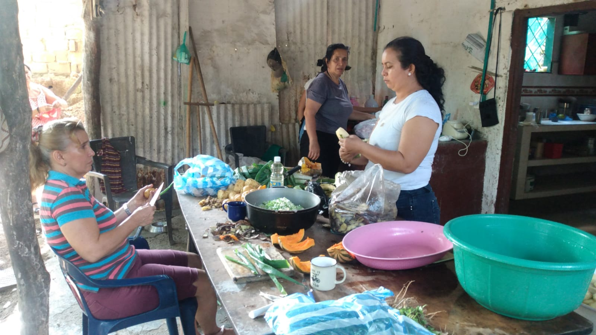
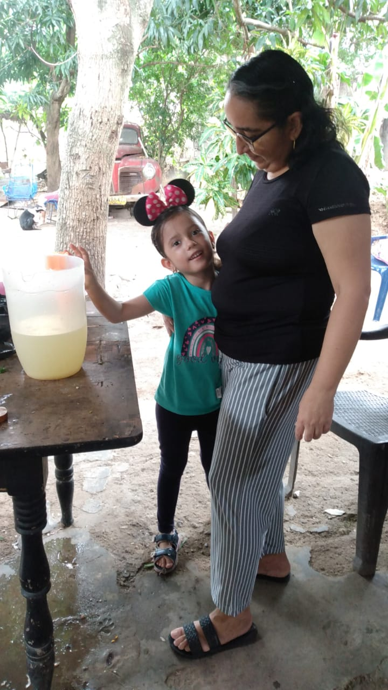
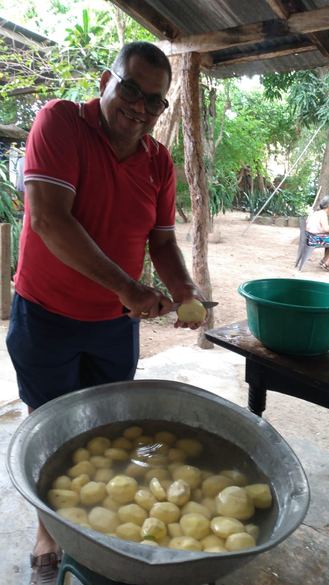

Actividad de recaudación
Fecha:06/10/2024



El día 6 de octubre del 2024 se llevó acabo una actividad de recaudación de fondos para apoyar a los niños de nuestra fundación, en la qué se vieron involucrados socios y personas allegadas para poder realizar la actividad cuyos fondos serán usados para el mejoramiento en la calidad de vida de los niños en pobreza extrema que se encuentran dentro de nuestra organización, muchas gracias a las personas que estuvieron en el proceso y a las que apoyaron participando por el bien común de los niños.
Ayudanos a compartir y a llegar a mas personas para poder seguir apoyando a estos niños.